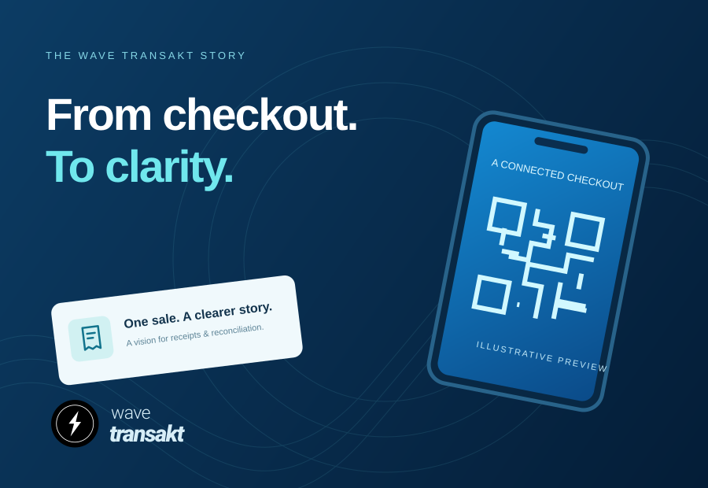

FIRST FOCUS
QR-first commerce
Customer scan, merchant confirmation, traceable receipts, payment history and reconciliation. A clearer connection between a sale and its record.
From a simple QR scan to a clearer picture of your business. We're building a more connected way to pay, sell and grow.
A customer receiving money. A shop owner closing a sale. A checkout that needs a clear record. We're connecting the details that make everyday commerce work.
Meet the customer side of Wave Transakt: a QR-first journey that brings merchant details, payment history and receipts into a clearer experience.

Explore how Wave Transakt is designed to work in our guided concept walkthrough. Our full product video will live right here when it's ready.
Illustrative experience. No real transactions are made.
Start with the checkout. Connect the tools around it.
Here's the ecosystem we're working towards.
Customer scan, merchant confirmation, traceable receipts, payment history and reconciliation. A clearer connection between a sale and its record.
Wavebiz concepts for sales, inventory, expenses, customer debts, invoices, receipts and reports. Tools to help small businesses understand their day.
The Wave Transakt Wallet vision: customer and merchant wallets, virtual accounts, and wallet-to-wallet or bank transfers through future approved integrations.
Airtime, data, electricity, television subscriptions and education payments, with travel reservations among the service concepts. One future home for everyday needs.
Wave POS, terminal pairing and merchant tools, with card acceptance, contactless payments and card management on the longer-term roadmap.
Android first. Future concepts include iOS, offline business tools, and AI or voice assistance in English and Hausa, supported by a connected platform.
A vision in progress. Wave Transakt is in development. Financial services, verification, provider integrations and settlement will depend on required approvals and completed testing. Roadmap items are not a promise of availability.
Designed with Nigerian neighbourhood commerce in mind.
Our ambition for the everyday.
We believe a better payment experience should also make the day easier to understand. Who paid? What was sold? Where is the receipt? What needs to be reconciled?
Wave Transakt is a Nigerian technology company building around those everyday questions. Our customer app, Wavebiz business tools and Wave POS share one vision: connect the checkout with the records and tools around it.
Know the company behind the product, understand what is available, and know where to get help.
WAVE TRANSAKT LTD is incorporated in Nigeria under RC 9915202. The platform is in development, with a focus on QR-first commerce and practical business tools.
Our company & statusThis website introduces the product and accepts enquiries by email. It does not open accounts or ask for PINs, OTPs, BVN, NIN or biometric information.
Read our privacy noticeLive financial services depend on the required provider arrangements, authorisations and testing. Sample balances and QR illustrations are presentation content.
Understand the website termsProtect your PIN and OTP. Check the merchant and amount before any real payment. Use official channels when asking for help.
Wave Transakt is currently in development and testing. This website introduces the vision; it does not offer live financial services or a public app download. Contact the team to ask about progress or future testing opportunities.
Wave Transakt is the customer-facing experience. Wavebiz focuses on running a business: sales, inventory, expenses, customer debts, invoices and reports. The business-management concept can stand on its own, with payment integration planned as a separate step.
Wave POS is the separate checkout and terminal experience in the Wave ecosystem. The concept connects merchant identity, terminal pairing and QR checkout. Live card and contactless acceptance require approved integrations, provisioning and testing.
No. These are roadmap concepts. Live movement of funds, identity verification and settlement remain subject to provider readiness, the necessary approvals and end-to-end testing. The walkthrough uses illustrative screens and does not move money.
The Chinedu Musa Ade profile, ₦6,300.00 balance and wallet QR are illustrative presentation content. They do not identify a live wallet, represent customer funds or allow payment through this website.
Android is the current focus. An iOS experience is part of the future vision; no iPhone release date has been announced.
A business owner, a potential collaborator, or just curious?
We'd love to hear from you.